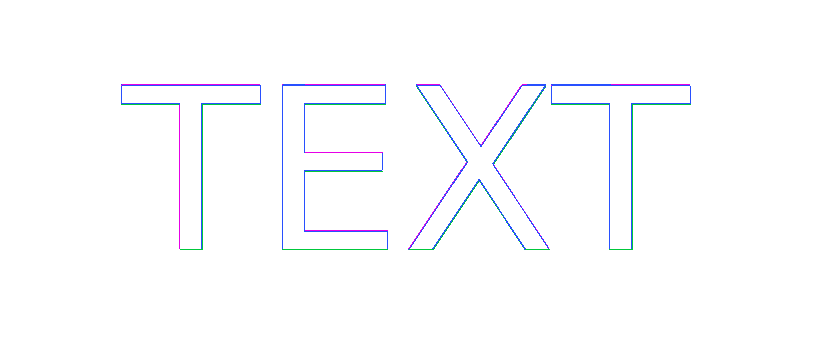

REFERENCE-DISPUTED 4554 px · above-floor 1.57% · raw 1.58% max-page diff background-clip-text-gradient · text · REFERENCE DISPUTEDAntialiasCoveragemissing 2.8%extra 3.8%ΔE 20.9

why: above-floor complete-page mismatch 1.565714% exceeds 1.0% PASS ceiling; visually accepted coverage phase; raw antialiasing coverage residue on a shared outline
background-clip:text clips a gradient background to glyph shapes; catches engines that map text to border-box or leave transparent text invisible.
reference dispute: CSS Backgrounds 4 defines background-clip:text by the text geometry, not a text-edge sampling grid or PDF representation. Chromium's PDF turns the matched ParitySans outlines into a 196x83 soft-mask image; Ironpress retains the same outline geometry as a vector text clip. The gradient interior and glyph positions agree, but the two valid edge-coverage strategies cannot be a unique pixel oracle.
regions (611 total; showing 64 representatives)
Complete dominant-class aggregates
| class | regions | pixels | union bbox (CSS px) | largest px | maximum magnitude |
|---|---|---|---|---|---|
| ColorErr | 271 | 2644 | 0,0 → 182,53 | 438 | total 2.8% · largest 0.5% |
| Missing | 162 | 810 | 0,0 → 182,52 | 144 | total 0.9% · largest 0.2% |
| Extra | 178 | 1100 | 0,1 → 182,53 | 227 | total 1.2% · largest 0.2% |
Representative region details (worst-first)
| class | bbox (CSS px) | area% | magnitude | reason |
|---|---|---|---|---|
| AntialiasCoverage | 52,0 → 84,52 | 0.5 | ΔRGB(-7,-16,-12) | antialiasing coverage residue on a shared outline |
| AntialiasCoverage | 138,0 → 182,52 | 0.4 | ΔRGB(-21,-21,-6) | antialiasing coverage residue on a shared outline |
| AntialiasCoverage | 0,0 → 44,52 | 0.4 | ΔRGB(-10,-28,-23) | antialiasing coverage residue on a shared outline |
| AntialiasCoverage | 59,22 → 85,52 | 0.3 | ΔRGB(-8,-15,-11) | antialiasing coverage residue on a shared outline |
| Extra | 156,6 → 182,53 | 0.2 | candidate adds paint absent from reference (0.2%) | |
| Extra | 19,6 → 44,53 | 0.2 | candidate adds paint absent from reference (0.2%) | |
| AntialiasCoverage | 138,1 → 156,52 | 0.2 | ΔRGB(54,57,20) | antialiasing coverage residue on a shared outline |
| Missing | 19,7 → 19,52 | 0.2 | candidate lacks paint present in reference (0.2%) | |
| Missing | 0,0 → 44,0 | 0.1 | candidate lacks paint present in reference (0.1%) | |
| Extra | 52,53 → 85,53 | 0.1 | candidate adds paint absent from reference (0.1%) | |
| Missing | 59,47 → 85,47 | 0.09 | candidate lacks paint present in reference (0.09%) | |
| Extra | 59,6 → 84,6 | 0.09 | candidate adds paint absent from reference (0.09%) | |
| Missing | 59,0 → 84,0 | 0.08 | candidate lacks paint present in reference (0.08%) | |
| Missing | 157,0 → 182,0 | 0.08 | candidate lacks paint present in reference (0.08%) | |
| Missing | 59,22 → 84,22 | 0.08 | candidate lacks paint present in reference (0.08%) | |
| Extra | 59,28 → 84,28 | 0.08 | candidate adds paint absent from reference (0.08%) | |
| AntialiasCoverage | 0,1 → 19,6 | 0.08 | ΔRGB(-24,-80,-69) | antialiasing coverage residue on a shared outline |
| Extra | 0,6 → 18,6 | 0.06 | candidate adds paint absent from reference (0.06%) | |
| Extra | 138,6 → 156,6 | 0.06 | candidate adds paint absent from reference (0.06%) | |
| AntialiasCoverage | 128,0 → 136,3 | 0.06 | ΔRGB(5,6,3) | antialiasing coverage residue on a shared outline |
| AntialiasCoverage | 94,0 → 102,1 | 0.03 | ΔRGB(115,177,104) | antialiasing coverage residue on a shared outline |
| Extra | 92,53 → 100,53 | 0.03 | candidate adds paint absent from reference (0.03%) | |
| Extra | 129,53 → 137,53 | 0.03 | candidate adds paint absent from reference (0.03%) | |
| Missing | 95,0 → 102,0 | 0.02 | candidate lacks paint present in reference (0.02%) | |
| AntialiasCoverage | 121,40 → 122,42 | 0.009512 | ΔRGB(-48,-62,-31) | antialiasing coverage residue on a shared outline |
| AntialiasCoverage | 114,30 → 115,31 | 0.007398 | ΔRGB(-39,-54,-28) | antialiasing coverage residue on a shared outline |
| AntialiasCoverage | 115,19 → 115,20 | 0.006341 | ΔRGB(51,70,37) | antialiasing coverage residue on a shared outline |
| Missing | 128,0 → 130,0 | 0.005284 | candidate lacks paint present in reference (0.005284%) | |
| AntialiasCoverage | 122,9 → 123,9 | 0.005284 | ΔRGB(51,67,33) | antialiasing coverage residue on a shared outline |
| AntialiasCoverage | 121,10 → 122,10 | 0.005284 | ΔRGB(51,68,34) | antialiasing coverage residue on a shared outline |
| AntialiasCoverage | 121,11 → 121,11 | 0.005284 | ΔRGB(51,68,34) | antialiasing coverage residue on a shared outline |
| AntialiasCoverage | 120,12 → 121,12 | 0.005284 | ΔRGB(51,68,34) | antialiasing coverage residue on a shared outline |
| AntialiasCoverage | 119,12 → 120,13 | 0.005284 | ΔRGB(51,68,34) | antialiasing coverage residue on a shared outline |
| AntialiasCoverage | 104,15 → 105,16 | 0.005284 | ΔRGB(-35,-52,-30) | antialiasing coverage residue on a shared outline |
| AntialiasCoverage | 105,16 → 105,17 | 0.005284 | ΔRGB(-36,-53,-30) | antialiasing coverage residue on a shared outline |
| AntialiasCoverage | 106,17 → 106,18 | 0.005284 | ΔRGB(-37,-54,-30) | antialiasing coverage residue on a shared outline |
| AntialiasCoverage | 106,18 → 107,19 | 0.005284 | ΔRGB(-37,-54,-31) | antialiasing coverage residue on a shared outline |
| AntialiasCoverage | 107,19 → 107,20 | 0.005284 | ΔRGB(-38,-56,-31) | antialiasing coverage residue on a shared outline |
| AntialiasCoverage | 108,20 → 108,20 | 0.005284 | ΔRGB(-39,-57,-32) | antialiasing coverage residue on a shared outline |
| AntialiasCoverage | 108,21 → 108,21 | 0.005284 | ΔRGB(-39,-57,-31) | antialiasing coverage residue on a shared outline |
| AntialiasCoverage | 109,22 → 109,22 | 0.005284 | ΔRGB(-40,-57,-31) | antialiasing coverage residue on a shared outline |
| AntialiasCoverage | 109,23 → 110,23 | 0.005284 | ΔRGB(-41,-59,-32) | antialiasing coverage residue on a shared outline |
| AntialiasCoverage | 110,24 → 110,24 | 0.005284 | ΔRGB(-42,-60,-32) | antialiasing coverage residue on a shared outline |
| AntialiasCoverage | 119,25 → 119,26 | 0.005284 | ΔRGB(-10,-14,-7) | antialiasing coverage residue on a shared outline |
| AntialiasCoverage | 110,25 → 110,26 | 0.005284 | ΔRGB(48,69,38) | antialiasing coverage residue on a shared outline |
| AntialiasCoverage | 109,26 → 110,27 | 0.005284 | ΔRGB(48,69,38) | antialiasing coverage residue on a shared outline |
| AntialiasCoverage | 108,27 → 109,28 | 0.005284 | ΔRGB(48,69,38) | antialiasing coverage residue on a shared outline |
| AntialiasCoverage | 108,28 → 108,29 | 0.005284 | ΔRGB(48,69,38) | antialiasing coverage residue on a shared outline |
| AntialiasCoverage | 107,29 → 108,30 | 0.005284 | ΔRGB(48,69,39) | antialiasing coverage residue on a shared outline |
| AntialiasCoverage | 107,30 → 107,31 | 0.005284 | ΔRGB(48,69,39) | antialiasing coverage residue on a shared outline |
| AntialiasCoverage | 106,31 → 107,32 | 0.005284 | ΔRGB(48,69,39) | antialiasing coverage residue on a shared outline |
| AntialiasCoverage | 115,31 → 116,32 | 0.005284 | ΔRGB(-40,-55,-29) | antialiasing coverage residue on a shared outline |
| AntialiasCoverage | 116,32 → 116,33 | 0.005284 | ΔRGB(-38,-53,-27) | antialiasing coverage residue on a shared outline |
| AntialiasCoverage | 123,44 → 124,44 | 0.005284 | ΔRGB(-56,-73,-36) | antialiasing coverage residue on a shared outline |
| AntialiasCoverage | 124,44 → 124,45 | 0.005284 | ΔRGB(-55,-72,-35) | antialiasing coverage residue on a shared outline |
| AntialiasCoverage | 124,45 → 125,46 | 0.005284 | ΔRGB(-55,-70,-35) | antialiasing coverage residue on a shared outline |
| AntialiasCoverage | 125,46 → 125,47 | 0.005284 | ΔRGB(-54,-69,-33) | antialiasing coverage residue on a shared outline |
| AntialiasCoverage | 126,47 → 126,48 | 0.005284 | ΔRGB(-52,-67,-32) | antialiasing coverage residue on a shared outline |
| AntialiasCoverage | 126,48 → 127,49 | 0.005284 | ΔRGB(-50,-64,-31) | antialiasing coverage residue on a shared outline |
| AntialiasCoverage | 127,49 → 127,50 | 0.005284 | ΔRGB(-48,-61,-29) | antialiasing coverage residue on a shared outline |
| AntialiasCoverage | 128,50 → 128,51 | 0.005284 | ΔRGB(-45,-57,-27) | antialiasing coverage residue on a shared outline |
| AntialiasCoverage | 128,51 → 129,52 | 0.005284 | ΔRGB(-44,-55,-26) | antialiasing coverage residue on a shared outline |
| AntialiasCoverage | 95,2 → 96,2 | 0.004227 | ΔRGB(-27,-43,-26) | antialiasing coverage residue on a shared outline |
| AntialiasCoverage | 96,3 → 96,3 | 0.004227 | ΔRGB(-28,-44,-26) | antialiasing coverage residue on a shared outline |
source · cases/backgrounds-borders/background-clip-text-gradient.html
1<!DOCTYPE html>
2<html lang="en">
3<head>
4<meta charset="utf-8">
5<title>background-clip text gradient</title>
6<style>
7 @page { size: 264px 112px; margin: 0; }
8 html { font-family: ParitySans; line-height: 1.5; }
9 * { margin: 0; box-sizing: border-box; }
10 html, body { background: #ffffff; }
11 .word {
12 width: 260px;
13 height: 110px;
14 font-size: 72px;
15 line-height: 110px;
16 text-align: center;
17 color: transparent;
18 background-image: linear-gradient(to right, #d50000, #2962ff);
19 background-clip: text;
20 -webkit-background-clip: text;
21 -webkit-text-fill-color: transparent;
22 }
23</style>
24</head>
25<body>
26 <div class="word">TEXT</div>
27</body>
28</html>